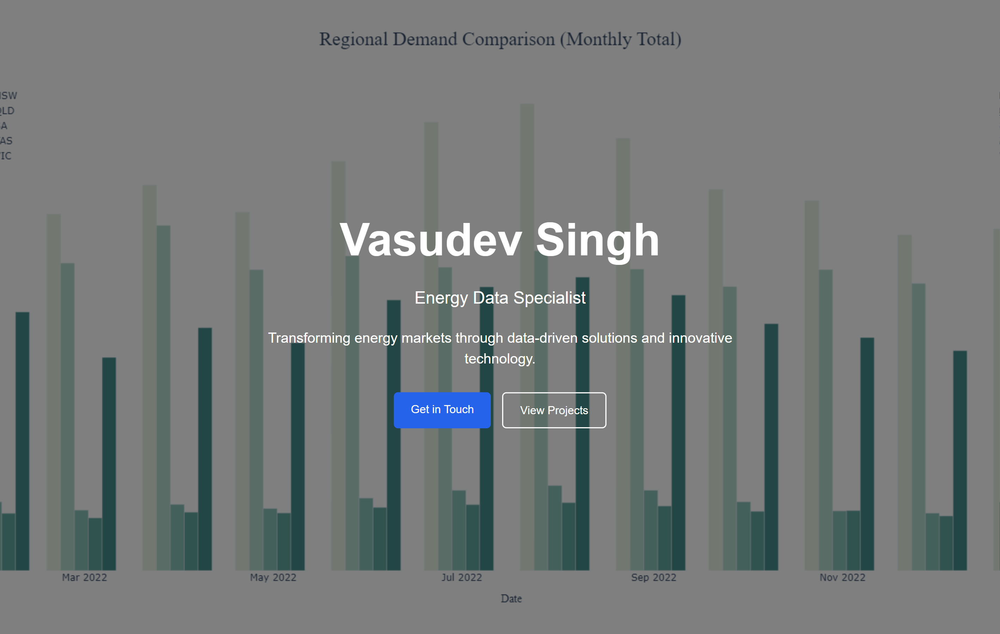

I have a rule that I have followed without fail for all data visualizations I or someone else creates - if a chart does not tell me what it is about in 10 seconds, it has failed. The sole purpose of a chart is to make data legible and highlight the story within it.
The Two Ways to Get It Wrong
There are two ways to ruin a chart and people manage both with impressive consistency.
The first is turning a chart into a presentation - a one-page report of sorts. Those where the page contains everything: from titles, subtitles, pop-ups, definitions, combo-charts, references, contributions, exceptions and so on. Some of the most prominent energy firms are known to be prone to these styles - and it always comes across as too much.
The second is making a chart that belongs in a museum. Battery storage analytics do not need buildings as bars. LMP price curves do not need animated flight paths. A clean bar chart is not lazy. It is correct. Every unit of visual complexity that doesn't add information takes something away.
Both mistakes have the same root at their core - they showcase the designer, not the data.
Data Is the Hero. Not You.
A line chart showing LMP price curves over time is not boring. It is clear. Clarity is the goal.
The question I ask before every visual data design decision is simple. Does this make the data easier to read, or does it make me look like I worked hard? Those are different things, and unfortunately most people confuse them, which is how most energy market dashboards become unusable.
Good design comes from restraint. Whitespace is not wasted space - it's a choice between clarity and cleverness. A clean grid is not a lack of effort - it's a display of structural integrity. A two-color palette is not a failure of imagination - it's timeless. These choices are hard to make because they require confidence - confidence that the data is interesting enough to stand on its own.
And the best part - the data usually is.
I learned this by trial and error myself. The principle itself was never the problem, but applying it seriously and properly was.
The Toggle
This website has had five lives. You are looking at the fifth.
The first had a fullscreen looping bar chart as the hero background - a bunch of well-designed Excel charts about energy prices and demand in AUS markets looping in the background - with my name and a tagline overlaid in white. "Transforming energy markets through data-driven solutions and innovative technology." The only thing this transformed was good data analysis into a subpar background image.
The second was VAGABOND.EXE. Retro terminal theme, black screen, green monospace font, blinking cursor. ABOUT.SYS. BLOG.SYS. PROJECTS.SYS. Was it clever? Maybe. Was it completely useless? 100% YES. Every design choice pointed at the aesthetic and away from the content. A reader landed and thought about the theme. Not the analysis. Not the writing. The theme. The container ate the content whole.


The current version exists because I finally asked the right question. Not "what looks interesting" but "what does the reader actually need."
Clean layout. Warm tones. Charts that stand alone. Where the battery dispatch article needs three panels - price profile, DA schedule, RT actual dispatch - they sit vertically, each with room to breathe, each readable in isolation. The reader moves through them in sequence. No legend archaeology. No cross-referencing. No squinting.
This is tidy data applied to design. Hadley Wickham's concept - each variable a column, each observation a row, each table one thing only. It is a philosophy: structure your data correctly and the visualization almost draws itself. The mess in a chart is usually a mess in the data underneath it. Clean that first. The design naturally follows.
Ordo ab chao.
"Order From Chaos" - The website and my visuals got better the moment I stopped designing them and started tidying them.
Motion and Flow
Tidy data solves the canvas. What you do with the product around it is a different problem.
The highest compliment I can give a product is this: it uses itself.
Nobody gets there completely. But it is the right thing to aim at.
Friction in a UI is not the enemy - directionless friction is. There is a difference between friction that guides a user toward the right next step and friction that exists because a designer didn't think hard enough about the screen. One is intentional. The other is a mistake.
A user should never have to search for the obvious. If a battery operator opens an energy market dashboard to check yesterday's revenue, that number should already be in front of them. It is obvious, easy to do and yet rarely accomplished.
And a user should never be drowned in the irrelevant. Every element on a screen is asking for attention. Attention runs out. A dashboard that shows everything shows nothing - it handed its job to the user and called it a feature.
Flow is when none of this is visible anymore. The user is thinking about their work and the product disappears into the background.
The Last Mile
Energy analysis is genuinely hard work. Good models take time, real expertise, and serious effort. The people doing this work are usually capable and rigorous.
And then they put the output in a chart nobody can read.
A chart that fails the 10-second rule after so much work is a tragedy.
The bar here is low. Most energy market dashboards and data products are badly designed because analysts never learned to think about design, and designers don't understand energy markets. If you can do both, you are in a genuinely small group. Use that.
Less is not laziness. It is the hardest thing to get right, and most people never bother trying.